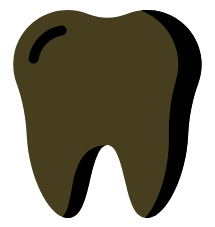
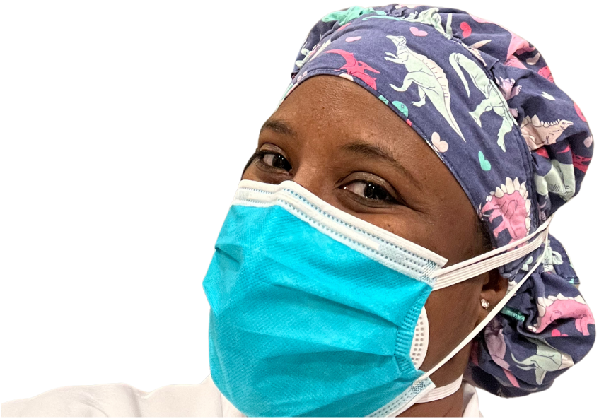

Partnering with families and oral health care providers to maintain healthy, growing pediatric smiles - because smiles are brighter with friends!
Meet Dr. Ayanna

Board-certified Pediatric Attending Dentist. Community educator. Smile cheerleader. And the little one’s favorite tooth friend!
Hey tooth Friends! I’m Dr. Ayanna Williams, a board-certified pediatric dentist, community educator, and the founder of Friendship Pediatric Dentistry.
I’ve dedicated my career to helping children from infancy through adolescence, including those with special healthcare needs, feel welcomed, safe, and supported in the dental chair.
I believe going to the dentist should feel like visiting a friend. Because when a child feels comfortable, confident, and cared for, everything about their oral health journey changes. I’m here to help every child build a bright smile and every parent feel empowered along the way.
“Every child deserves a dental home where they feel safe, seen, and celebrated”
As a Pediatric Attending Dentist with operating room privileges, I provide care in both private practice and hospital-based settings ensuring that every child has access to safe, high-quality treatment, no matter their needs or background.
I also have the privilege of mentoring dental residents, helping them grow into compassionate, confident providers who are ready to care for kids with the same empathy and excellence I strive to deliver every day.
With a heart for community health, I’m passionate about bringing dental education directly to families through health fairs and local outreach events. My Flossy Friends Academy program was built to open the door for girls to explore dentistry in a fun, hands-on way. I expand access to care, advocate for kids, and train the next generation to do the same.
Training and Education
My educational journey reflects my passion for science, health, and creating brighter smiles.
-

DDS Degree - The Ohio State University
-
Pediatric Dental Specialty - Case Western Reserve University
-
Master of Health Science (Biochemistry) - Johns Hopkins Bloomberg School of Public Health
I am proud to serve as a Pediatric Attending Dentist at Advocate Illinois Masonic Medical Center, where I mentor future dental providers and advocate for compassionate, accessible care for all kids.
I am also a Diplomate of the American Board of Pediatric Dentistry, committed to delivering the highest standard of care to every patient, every day.
“I expand access to care, advocate for kids, and train the next generation to do the same” - Dr. Ayanna
